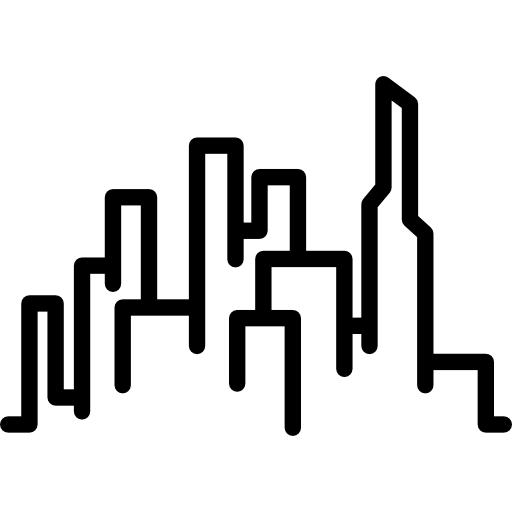

Giovane Soldera Ribeiro
-
 E-mail: giovanesold10@gmail.com
E-mail: giovanesold10@gmail.com
-
 LinkedIn: linkedin.com/in/giovanesold
LinkedIn: linkedin.com/in/giovanesold
-  Cornélio Procópio, Paraná
Estudante de Análise e Desenvolvimento de Sistemas na UTFPR. Jovem Aprendiz recente na empresa IGC - Cia Iguaçu de Café Solúvel. Possui interesse em Desenvolvimento Web Full Stack, Data Science aplicada à automação e Banco de Dados. Formação Técnico em Administração e certificação Yellow Belt - FM2S.
Graduação em Análise e Desenvolvimento de Sistemas
UTFPR – (Cursando)
Ensino Médio Integrado Técnico em Administração
Colégio Estadual Castro Alves – 2023